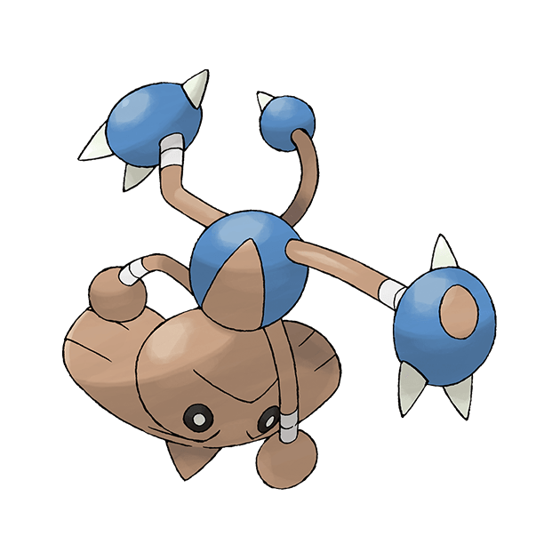

<body><div class="img-box" style="float:right;"></div><h1>战舞郎</h1>
<h3><span 外貌"></span><span -headline" .E5.A4.96.E8.B2.8C">外貌</span></h3>
<p>主體為褐色，四肢及尾巴部分有繃帶狀和藍色護具構造。頭頂的尖刺是他的一大特色。
</p>
<h4><span 性别差异"></span><span -headline" .E6.80.A7.E5.88.AB.E5.B7.AE.E5.BC.82">性别差异</span></h4>
<p>战舞郎只有雄性，也没有对应的雌性宝可梦与牠配对。
</p>
<h3><span 特殊能力"></span><span -headline" .E7.89.B9.E6.AE.8A.E8.83.BD.E5.8A.9B">特殊能力</span></h3>
<p>战舞郎可以一边倒立一边使用招式，并且持续很长时间，除非被破坏平衡。
</p>
<h3><span 性情"></span><span -headline" .E6.80.A7.E6.83.85">性情</span></h3>
<h3><span 栖息地"></span><span -headline" .E6.A0.96.E6.81.AF.E5.9C.B0">栖息地</span></h3>
<h3><span 饮食"></span><span -headline" .E9.A5.AE.E9.A3.9F">饮食</span></h3>
<dl><dd><i>主頁面：</i><i><a  title="宝可梦食物">宝可梦食物</a></i></dd></dl>
</body>